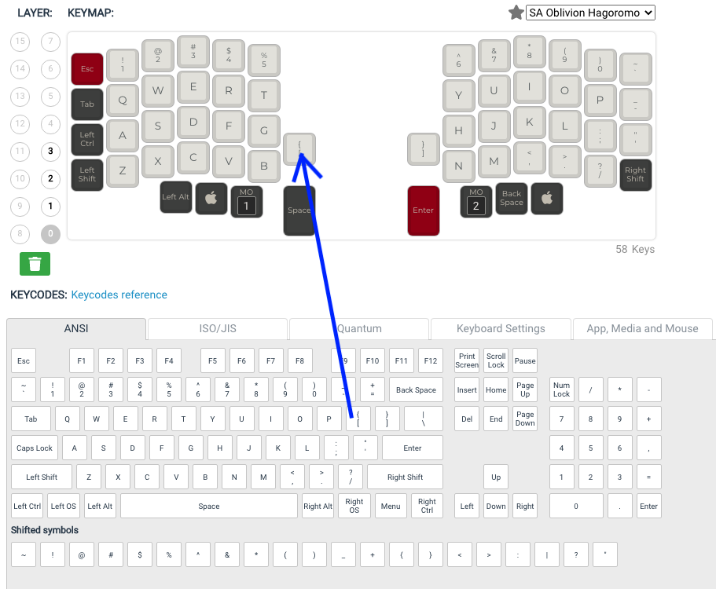
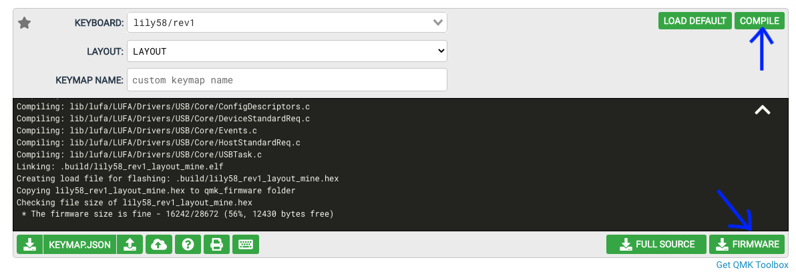

Making your keymap¶
I’ve already made a couple of key mappings that you can use. You can find them here. These are meant as starting points to be edited to your liking using this tool but can also be used as is.
To change the mapping all you need to do is drag and drop the keys from the bottom keyboard to the top one.
When you’re happy with your layout you can save your configuration to your computer by downloading the .JSON file. Then hit the compile button at the top of the page. After it is done compiling you can download the .hex file by pressing the now green firmware button.
